Navodila za izdelavo 360° sprehoda okoli Ljubljanskega gradu
V tem projektu boste izdelali 360° sprehod po okolici Ljubljanskega gradu. Pri tem bomo uporabili brezplačno spletno platformo Lapentor. Primer končnega projekta najdete na:
Lapentor - primer končanega 360° sprehoda
Sprehod vsebuje 6 postojank, ki uporabnika vodijo od zunanje strani obzidja pod stolpom, skozi glavni vhod in na obzidje. Vse potrebne datoteke za izdelavo sprehoda si naložite s klikom na spodnjo ikono.
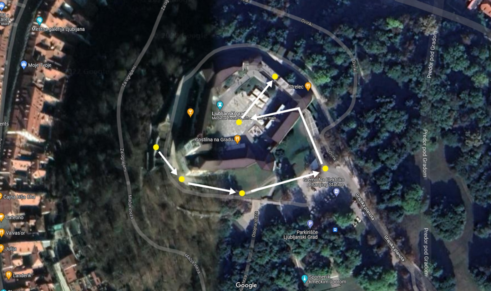
Na voljo imate tudi 360° kamero Ricoh Theta Z1 in jo lahko uporabite za izdelavo lastnih 360° posnetkov. Navodila za uporabo kamere najdete na povezavi:
Navodila za uporabo kamere Ricoh Theta Z1
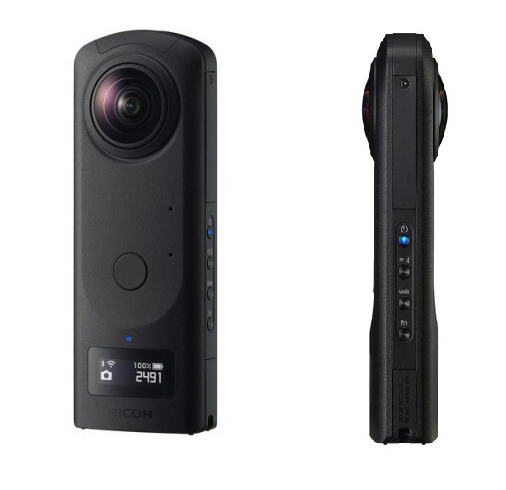
Priprava projekta
Prijavi se v platformo Lapentor. Ustvari nov projekt s klikom na ikono +, ga poimenuj in potrdi svojo odločitev s klikom na gumb OK.
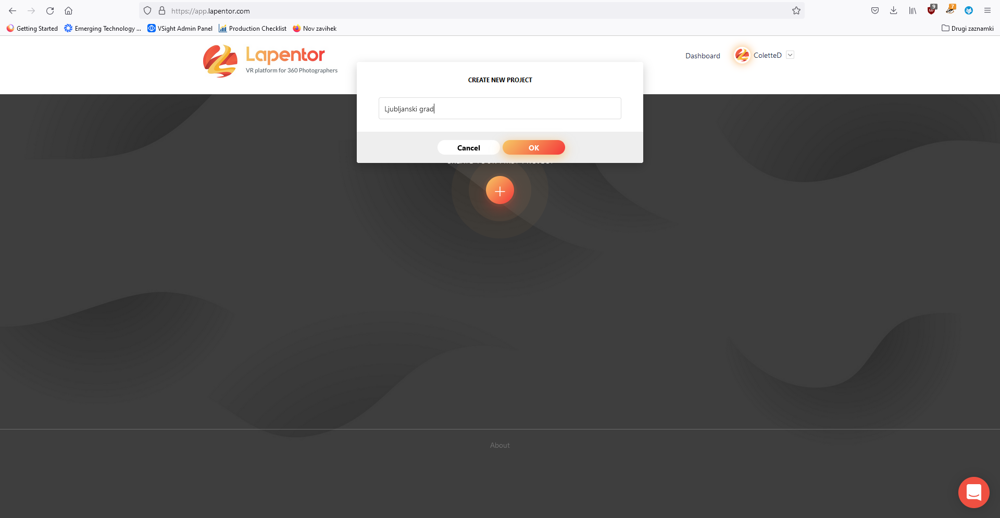
Naloži prvo 360° fotografijo v medijsko knjižnico, tako da jo povlečeš iz mape, v kateri je shranjena, in spustiš v siv okvirček.
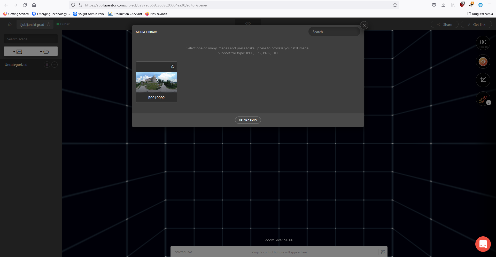
Panoramsko sliko je potrebno pretvoriti v sfero. Klikni na uvoženo fotografijo, izberi MAKE SPHERE in nato Multiresolution.
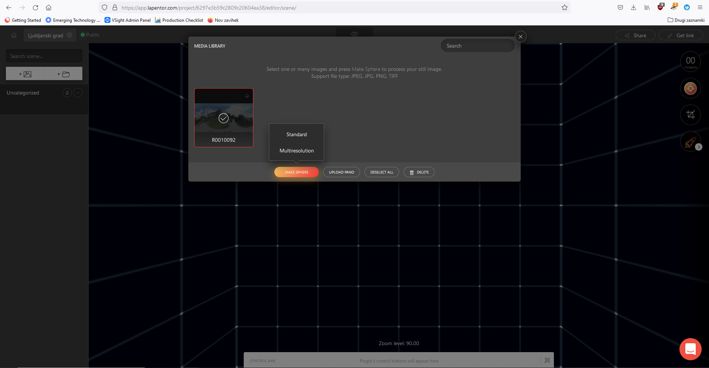
Fotografije dodajaj posamično. Vsako naslednjo fotografijo dodaš s klikom na ikono v zgornjem levem kotu in nato izbereš From Media Library. Uvožene fotografije lahko preimenuješ, tako da klikneš na njihovo trenutno ime in vpišeš novega.
Vezava slik v sprehod
Uvožene fotografije je sedaj potrebno povezati v sprehod. To naredimo prek dodajanja lokacijskih funkcijskih točk (Point Hotspot), ki jih najdemo na desni strani zaslona. Z miško kliknemo in držimo ikono ter jo nesemo na mesto v fotografiji, ki predstavlja izhodišče naslednje fotografije v sprehodu.
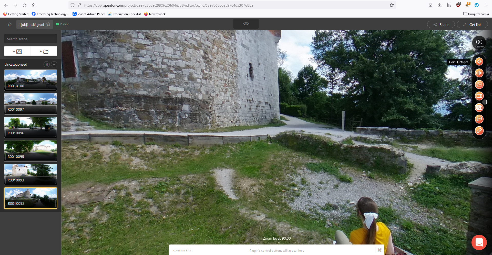
S klikom na ravnokar ustvarjeno lokacijsko točko, se nam odpre meni, kjer lahko prilagodimo nastavitve lokacijske točke:
• ime fotografije, kamor se želimo teleportirati,
• začetni pogled fotografije (smer gledanja) ob teleportiranju,
• ime lokacijske točke,
• izbira ikone po meri,
• velikost ikone.
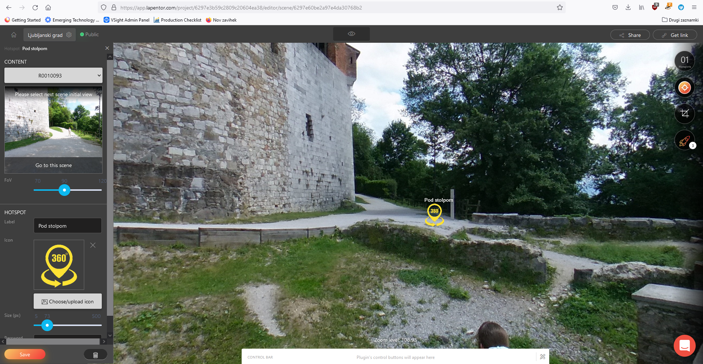
S klikom na Set default view lahko prilagodimo začetno smer gledanja.
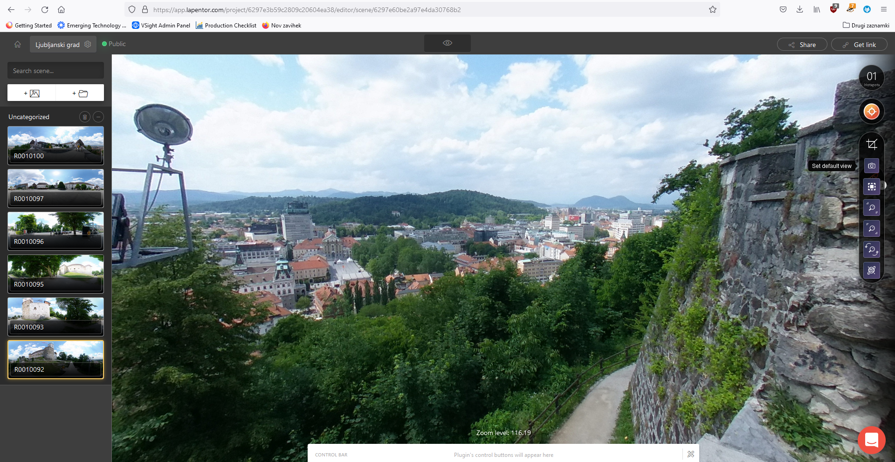
Dodajanje informacijskih točk
Vsako fotografijo lahko opremimo z dodatnimi informacijami v obliki:
• zvoka,
• slike,
• videa,
• članka,
• teksta,
• spletne povezave.
Informacijke točke (Hotspots) se nahajajo na desni strani zaslona in jih na fototgrafijo pripnemo tako, da na željeno ikono kliknemo, držimo in jo nesemo na željeno mesto na fotografiji.
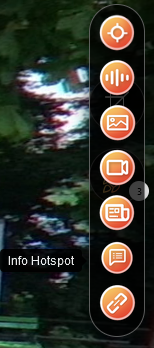
S klikom na ikono se nam na levi strani zaslona odpre meni, ki nam omogoča prilagajanje informacijske točke. Nastavitve je potrebno potrditi s klikom na gumb Save.
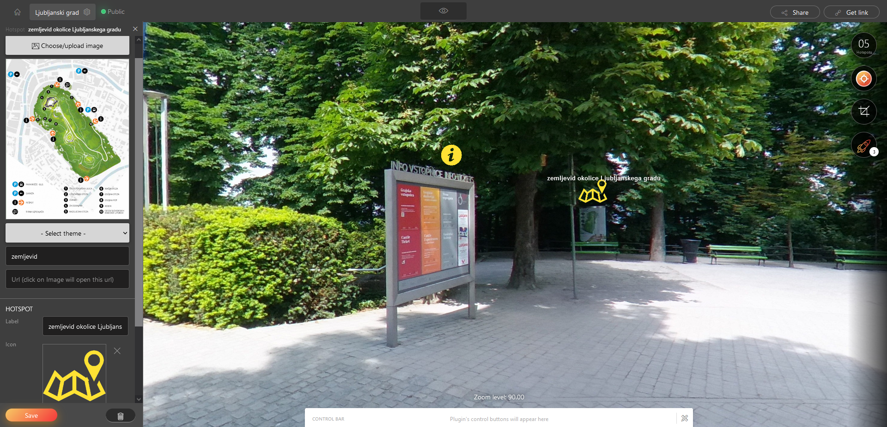
S klikom na ikono z očesom, ki se nahaja na vrhu zaslona, si lahko ogledamo našo kreacijo. Z ostalimi jo lahko delimo prek QR kode ali url povezave.
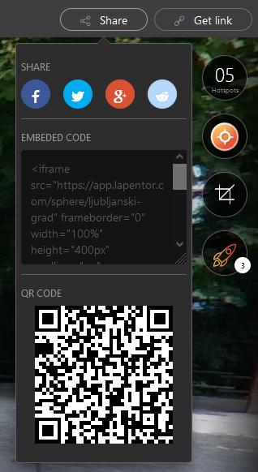
Dodatne vsebine
Svoje znanje o 360° tehniki in ustvarjanju 360° sprehodov lahko preveriš s kratkim kvizom: